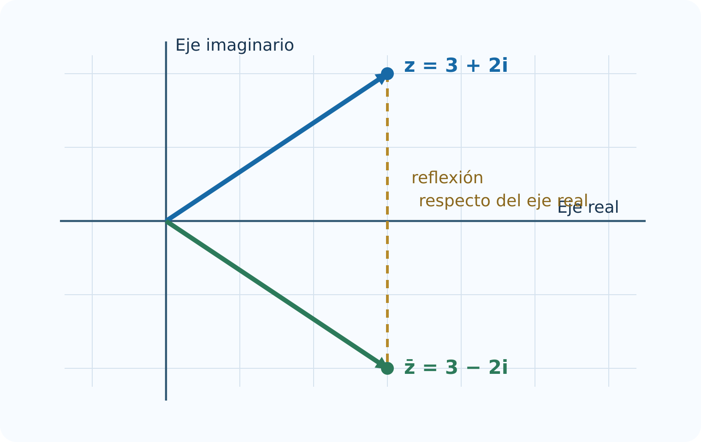
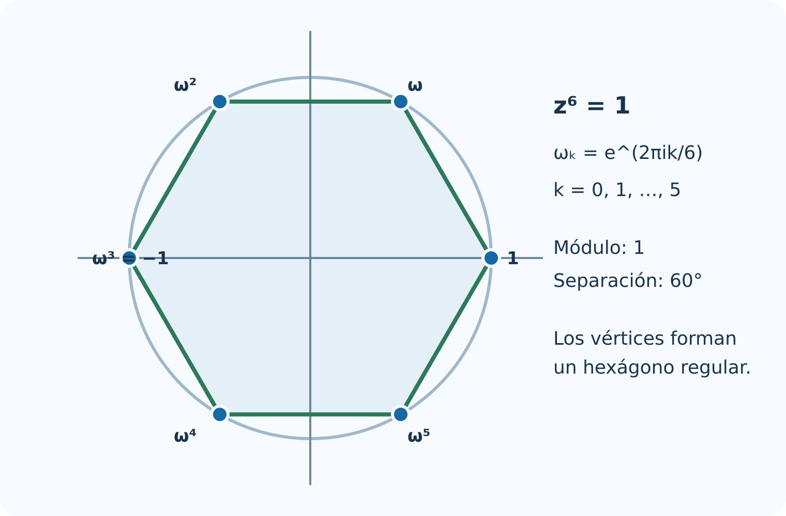

3 Números complejos
Este capítulo desarrolla la Unidad 3 del programa oficial de Álgebra Superior de la Facultad de Ciencias de la UASLP (Universidad Autónoma de San Luis Potosí, Facultad de Ciencias 2011). La idea central es construir los números complejos a partir del plano real: primero se estudia \(\mathbb R^2\), después se dota a los pares ordenados de una multiplicación especial y, finalmente, se interpreta cada operación en forma algebraica y geométrica.
Introducción
En \(\mathbb R\) la ecuación \(x^2+1=0\) no tiene solución, porque \(x^2\geq 0\) para todo número real. Para resolverla sin perder las leyes usuales del álgebra es necesario ampliar el sistema numérico. Esa ampliación es \(\mathbb C\), el conjunto de los números complejos.
La construcción no surge de un símbolo misterioso. Un número complejo puede entenderse como un par \((a,b)\in\mathbb R^2\) con reglas precisas para sumar y multiplicar. La forma \(a+bi\) resume ese par, y la identidad \(i^2=-1\) es una consecuencia de la multiplicación definida en el plano.
Objetivos del capítulo
Al terminar el capítulo, el lector podrá:
- describir puntos y vectores de \(\mathbb R^2\);
- convertir entre coordenadas cartesianas y polares;
- operar vectores y justificar sus propiedades;
- calcular módulo y argumento;
- construir \(\mathbb C\) a partir de \(\mathbb R^2\);
- sumar, restar, multiplicar y dividir números complejos;
- utilizar el conjugado y demostrar sus propiedades;
- calcular potencias mediante la fórmula de De Moivre;
- obtener todas las raíces \(n\)-ésimas de un complejo;
- relacionar las operaciones algebraicas con movimientos del plano.
3.1 Definición de \(\mathbb R^2\)
El plano real es el producto cartesiano
\[ \mathbb R^2=\mathbb R\times\mathbb R =\{(x,y):x\in\mathbb R,\ y\in\mathbb R\}. \]
Dos pares son iguales si y solo si coinciden sus componentes:
\[ (x,y)=(u,v)\iff x=u\ \text{y}\ y=v. \]
Un par \((x,y)\) puede interpretarse como un punto del plano o como el vector que parte del origen y termina en ese punto. El contexto determina la interpretación, pero los cálculos con sus componentes son los mismos.
Los vectores
\[ \mathbf e_1=(1,0),\qquad \mathbf e_2=(0,1) \]
forman la base canónica. Todo vector \(\mathbf v=(x,y)\) tiene una expresión única
\[ \mathbf v=x\mathbf e_1+y\mathbf e_2. \]
Ejes, cuadrantes y distancia
El eje horizontal corresponde a los puntos \((x,0)\) y el vertical a \((0,y)\). Los signos de \(x\) y \(y\) determinan los cuatro cuadrantes.
Por el teorema de Pitágoras, la distancia de \(P=(x,y)\) a \(Q=(u,v)\) es
\[ d(P,Q)=\sqrt{(x-u)^2+(y-v)^2}. \]
En particular, la longitud del vector \((x,y)\) es \(\sqrt{x^2+y^2}\).
Si \(P=(-2,3)\) y \(Q=(4,-1)\), entonces
\[ d(P,Q)=\sqrt{(-2-4)^2+(3+1)^2}=\sqrt{52}=2\sqrt{13}. \]
3.2 Representaciones cartesiana y polar de vectores en \(\mathbb R^2\)
La representación cartesiana \((x,y)\) indica cuánto se avanza horizontal y verticalmente. La representación polar \((r,\theta)\) indica una distancia al origen y un ángulo medido desde el eje positivo \(x\).
Para \((x,y)\neq(0,0)\):
\[ r=\sqrt{x^2+y^2},\qquad x=r\cos\theta,\qquad y=r\sin\theta. \]
Por tanto,
\[ \cos\theta=\frac{x}{r},\qquad \sin\theta=\frac{y}{r}. \]
El ángulo debe elegirse en el cuadrante correcto. La igualdad \(\tan\theta=y/x\) no basta por sí sola, porque la tangente tiene periodo \(\pi\) y no distingue puntos opuestos.

No unicidad del ángulo
El mismo vector queda representado por
\[ (r,\theta),\ (r,\theta+2\pi),\ (r,\theta-2\pi),\ldots \]
En general, todos sus ángulos son \(\theta+2k\pi\), con \(k\in\mathbb Z\). Para evitar ambigüedad se elige un argumento principal, usualmente en \((-\pi,\pi]\).
El origen tiene radio \(r=0\), pero no tiene un ángulo determinado. Cualquier dirección termina en el mismo punto cuando la distancia es cero.
Ejemplo resuelto
Para el vector \((-\sqrt3,1)\):
\[ r=\sqrt{3+1}=2. \]
Como está en el segundo cuadrante y
\[ \cos\theta=-\frac{\sqrt3}{2},\qquad \sin\theta=\frac12, \]
se obtiene \(\theta=5\pi/6\). Su forma polar principal es \((2,5\pi/6)\).
3.3 Operaciones con vectores en \(\mathbb R^2\)
Sean \(\mathbf u=(u_1,u_2)\), \(\mathbf v=(v_1,v_2)\) y \(\lambda\in\mathbb R\).
\[ \begin{aligned} \mathbf u+\mathbf v&=(u_1+v_1,u_2+v_2),\\ \mathbf u-\mathbf v&=(u_1-v_1,u_2-v_2),\\ \lambda\mathbf u&=(\lambda u_1,\lambda u_2),\\ \mathbf u\cdot\mathbf v&=u_1v_1+u_2v_2. \end{aligned} \]
La suma obedece la regla del paralelogramo. Al colocar dos copias de \(\mathbf u\) y \(\mathbf v\) con el mismo origen, la diagonal del paralelogramo es \(\mathbf u+\mathbf v\).

Propiedades algebraicas
Para cualesquiera \(\mathbf u,\mathbf v,\mathbf w\in\mathbb R^2\) y \(\lambda,\mu\in\mathbb R\):
\[ \begin{aligned} \mathbf u+\mathbf v&=\mathbf v+\mathbf u,\\ (\mathbf u+\mathbf v)+\mathbf w&=\mathbf u+(\mathbf v+\mathbf w),\\ \mathbf u+\mathbf 0&=\mathbf u,\\ \mathbf u+(-\mathbf u)&=\mathbf 0,\\ \lambda(\mathbf u+\mathbf v)&=\lambda\mathbf u+\lambda\mathbf v,\\ (\lambda+\mu)\mathbf u&=\lambda\mathbf u+\mu\mathbf u,\\ (\lambda\mu)\mathbf u&=\lambda(\mu\mathbf u),\\ 1\mathbf u&=\mathbf u. \end{aligned} \]
Todas se demuestran comparando componentes. Por ejemplo,
\[ \lambda(\mathbf u+\mathbf v) =(\lambda(u_1+v_1),\lambda(u_2+v_2)) =\lambda\mathbf u+\lambda\mathbf v. \]
Producto punto y perpendicularidad
Si \(\varphi\) es el ángulo entre dos vectores no nulos, entonces
\[ \mathbf u\cdot\mathbf v=|\mathbf u\|\|\mathbf v\|\cos\varphi. \]
De aquí se deduce que \(\mathbf u\perp\mathbf v\) si y solo si \(\mathbf u\cdot\mathbf v=0\).
Para \(\mathbf u=(2,1)\) y \(\mathbf v=(-1,2)\),
\[ \mathbf u\cdot\mathbf v=2(-1)+1(2)=0. \]
Por tanto, los vectores son perpendiculares.
3.4 Módulo y argumento
Para un vector \(\mathbf v=(x,y)\) se define su módulo o norma euclidiana como
\[ \|\mathbf v\|=\sqrt{x^2+y^2}. \]
Si \(\mathbf v\neq\mathbf 0\), un argumento de \(\mathbf v\) es cualquier ángulo \(\theta\) que cumple
\[ \mathbf v=\|\mathbf v\|(\cos\theta,\sin\theta). \]
Propiedades del módulo
Para \(\mathbf u,\mathbf v\in\mathbb R^2\) y \(\lambda\in\mathbb R\):
\[ \begin{aligned} \|\mathbf v\|&\geq 0,\\ \|\mathbf v\|=0&\iff \mathbf v=\mathbf 0,\\ \|\lambda\mathbf v\|&=|\lambda|\,\|\mathbf v\|,\\ |\mathbf u\cdot\mathbf v|&\leq \|\mathbf u\|\|\mathbf v\|,\\ \|\mathbf u+\mathbf v\|&\leq \|\mathbf u\|+\|\mathbf v\|. \end{aligned} \]
La cuarta desigualdad es la de Cauchy-Schwarz y la quinta es la desigualdad triangular.
Demostración de la desigualdad triangular
Usando Cauchy-Schwarz:
\[ \begin{aligned} \|\mathbf u+\mathbf v\|^2 &=(\mathbf u+\mathbf v)\cdot(\mathbf u+\mathbf v)\\ &=\|\mathbf u\|^2+2\mathbf u\cdot\mathbf v+\|\mathbf v\|^2\\ &\leq \|\mathbf u\|^2+2\|\mathbf u\|\|\mathbf v\|+\|\mathbf v\|^2\\ &=(\|\mathbf u\|+\|\mathbf v\|)^2. \end{aligned} \]
Ambos lados son no negativos; al extraer raíz cuadrada se obtiene el resultado.
3.5 Números imaginarios y complejos
Definimos en \(\mathbb R^2\) una suma usual y una multiplicación nueva:
\[ (a,b)+(c,d)=(a+c,b+d), \]
\[ (a,b)(c,d)=(ac-bd,ad+bc). \]
Con estas operaciones, \(\mathbb R^2\) se convierte en el campo de los números complejos \(\mathbb C\).
Sea
\[ 1=(1,0),\qquad i=(0,1). \]
Entonces
\[ i^2=(0,1)(0,1)=(-1,0)=-1. \]
Además,
\[ (a,b)=(a,0)+(0,b)=a(1,0)+b(0,1)=a+bi. \]
Un número complejo es una expresión
\[ z=a+bi,\qquad a,b\in\mathbb R,\qquad i^2=-1. \]
Se llama \(a=\operatorname{Re}(z)\) a su parte real y \(b=\operatorname{Im}(z)\) a su parte imaginaria.
Dos complejos son iguales exactamente cuando coinciden sus partes:
\[ a+bi=c+di\iff a=c\ \text{y}\ b=d. \]
Los reales están incluidos en \(\mathbb C\) mediante \(a=a+0i\). Un complejo de la forma \(bi\) con \(b\neq0\) se denomina imaginario puro.
3.6 Operaciones básicas con números complejos
Sean \(z=a+bi\) y \(w=c+di\).
\[ \begin{aligned} z+w&=(a+c)+(b+d)i,\\ z-w&=(a-c)+(b-d)i,\\ zw&=(ac-bd)+(ad+bc)i. \end{aligned} \]
La regla de multiplicación se obtiene distribuyendo y sustituyendo \(i^2\) por \(-1\):
\[ (a+bi)(c+di)=ac+adi+bci+bd i^2. \]
Para \(z=3-2i\) y \(w=1+4i\):
\[ z+w=4+2i, \]
\[ zw=3+12i-2i-8i^2=11+10i. \]
Interpretación polar de la multiplicación
Si
\[ z=r(\cos\alpha+i\sin\alpha),\qquad w=s(\cos\beta+i\sin\beta), \]
entonces, por las identidades de suma de ángulos,
\[ zw=rs\bigl(\cos(\alpha+\beta)+i\sin(\alpha+\beta)\bigr). \]
Por tanto, multiplicar complejos significa multiplicar módulos y sumar argumentos. Geométricamente, multiplicar por \(w\) produce una dilatación de factor \(|w|\) y una rotación de ángulo \(\arg(w)\).
Ejemplo geométrico
Multiplicar por \(i\) conserva el módulo y suma \(\pi/2\) al argumento. Por eso
\[ i(a+bi)=-b+ai \]
representa una rotación de \(90^\circ\) en sentido antihorario.
3.7 Complejo conjugado y sus propiedades
El conjugado de \(z=a+bi\) es
\[ \overline z=a-bi. \]
Geométricamente, la conjugación refleja el punto respecto del eje real.

Propiedades
Para \(z,w\in\mathbb C\):
\[ \begin{aligned} \overline{\overline z}&=z,\\ \overline{z+w}&=\overline z+\overline w,\\ \overline{zw}&=\overline z\,\overline w,\\ z\overline z&=|z|^2,\\ |\overline z|&=|z|,\\ z\in\mathbb R&\iff z=\overline z. \end{aligned} \]
También permite recuperar las partes real e imaginaria:
\[ \operatorname{Re}(z)=\frac{z+\overline z}{2}, \qquad \operatorname{Im}(z)=\frac{z-\overline z}{2i}. \]
Demostración de la propiedad multiplicativa
Si \(z=a+bi\) y \(w=c+di\), entonces
\[ zw=(ac-bd)+(ad+bc)i. \]
Por consiguiente,
\[ \overline{zw}=(ac-bd)-(ad+bc)i. \]
Por otro lado,
\[ \overline z\,\overline w=(a-bi)(c-di) =(ac-bd)-(ad+bc)i. \]
Ambas expresiones son iguales.
3.8 División de complejos
Para dividir entre \(w=c+di\neq0\) se multiplica numerador y denominador por \(\overline w\):
\[ \frac{z}{w} =\frac{z\overline w}{w\overline w} =\frac{(a+bi)(c-di)}{c^2+d^2}. \]
Así,
\[ \frac{a+bi}{c+di} =\frac{ac+bd}{c^2+d^2} +\frac{bc-ad}{c^2+d^2}i. \]
El inverso de un complejo no nulo es
\[ z^{-1}=\frac{\overline z}{|z|^2}. \]
\[ \frac{2+3i}{1-2i} =\frac{(2+3i)(1+2i)}{(1-2i)(1+2i)} =\frac{-4+7i}{5} =-\frac45+\frac75i. \]
La comprobación consiste en multiplicar el resultado por \(1-2i\) y recuperar \(2+3i\).
División en forma polar
Si \(z=r(\cos\alpha+i\sin\alpha)\) y \(w=s(\cos\beta+i\sin\beta)\), con \(s>0\), entonces
\[ \frac zw=\frac rs\bigl(\cos(\alpha-\beta)+i\sin(\alpha-\beta)\bigr). \]
Dividir significa dividir módulos y restar argumentos.
3.9 Potencias y raíces de complejos
Fórmula de De Moivre
Para \(n\in\mathbb Z\) y
\[ z=r(\cos\theta+i\sin\theta), \]
se cumple
\[ z^n=r^n\bigl(\cos(n\theta)+i\sin(n\theta)\bigr). \]
Para \(n\geq1\), la demostración se obtiene por inducción usando las fórmulas de suma del seno y el coseno. Para exponentes negativos se aplica el inverso.
Como
\[ 1+i=\sqrt2\left(\cos\frac\pi4+i\sin\frac\pi4\right), \]
entonces
\[ (1+i)^8=(\sqrt2)^8\left(\cos2\pi+i\sin2\pi\right)=16. \]
Raíces \(n\)-ésimas
Sea
\[ z=r(\cos\theta+i\sin\theta),\qquad r>0. \]
Las soluciones de \(w^n=z\) son
\[ w_k=\sqrt[n]{r}\left[ \cos\left(\frac{\theta+2k\pi}{n}\right) +i\sin\left(\frac{\theta+2k\pi}{n}\right) \right], \]
para \(k=0,1,\ldots,n-1\).
Son exactamente \(n\) puntos igualmente espaciados sobre la circunferencia de radio \(\sqrt[n]{r}\).
Raíces de la unidad
Las soluciones de \(w^n=1\) son
\[ \omega_k=\cos\frac{2k\pi}{n}+i\sin\frac{2k\pi}{n} =e^{2k\pi i/n}, \]
con \(k=0,\ldots,n-1\). Forman los vértices de un polígono regular inscrito en la circunferencia unitaria.

Escribimos
\[ -8=8(\cos\pi+i\sin\pi). \]
Las raíces son
\[ w_k=2\left[\cos\left(\frac{\pi+2k\pi}{3}\right) +i\sin\left(\frac{\pi+2k\pi}{3}\right)\right], \quad k=0,1,2. \]
Por tanto,
\[ w_0=1+\sqrt3i,\qquad w_1=-2,\qquad w_2=1-\sqrt3i. \]
Síntesis del capítulo
- \(\mathbb R^2\) está formado por pares ordenados y proporciona el modelo geométrico de \(\mathbb C\).
- Las coordenadas cartesianas describen componentes; las polares describen módulo y argumento.
- La suma de complejos corresponde a suma vectorial.
- La multiplicación compleja multiplica módulos y suma argumentos.
- El conjugado refleja respecto del eje real y cumple \(z\overline z=|z|^2\).
- La división utiliza el conjugado o, en forma polar, divide módulos y resta argumentos.
- De Moivre transforma potencias en multiplicación de ángulos.
- Toda raíz \(n\)-ésima no nula tiene \(n\) valores igualmente espaciados.
Errores frecuentes
- Usar \(\arctan(y/x)\) sin revisar el cuadrante. Deben considerarse los signos de \(x\) y \(y\).
- Asignar argumento al cero. El número \(0\) no tiene argumento definido.
- Olvidar que \(i^2=-1\). Es la fuente principal de errores de signo al multiplicar.
- Conjugar solo una parte de una expresión. Se cumple \(\overline{z+w}=\overline z+\overline w\) y \(\overline{zw}=\overline z\,\overline w\).
- Dividir componentes directamente. En general, \((a+bi)/(c+di)\) no es \(a/c+(b/d)i\).
- Dar una sola raíz \(n\)-ésima. Para \(z\neq0\) existen exactamente \(n\) raíces distintas.
- Mezclar grados y radianes. Las fórmulas analíticas se escriben normalmente en radianes.
- Confundir \(|z|\) con \(\operatorname{Re}(z)\). El módulo siempre es real no negativo.
Ejercicios
Nivel básico
- Ubique en el plano \((3,-2)\), \((-1,4)\), \((-3,-3)\) y \((0,5)\) e indique su cuadrante o eje.
- Calcule la distancia entre \(P=(2,-1)\) y \(Q=(-4,7)\).
- Convierta \((\sqrt3,1)\) y \((-1,-\sqrt3)\) a forma polar principal.
- Convierta \((r,\theta)=(4,5\pi/6)\) a coordenadas cartesianas.
- Sean \(\mathbf u=(2,-3)\) y \(\mathbf v=(-1,5)\). Calcule \(\mathbf u+\mathbf v\), \(2\mathbf u-\mathbf v\) y \(\mathbf u\cdot\mathbf v\).
- Calcule \(|3-4i|\), \(\operatorname{Re}(3-4i)\) y \(\operatorname{Im}(3-4i)\).
- Efectúe \((2+5i)+(-3+i)\) y \((2+5i)(-3+i)\).
- Halle el conjugado de \(-7+2i\) y compruebe \(z\overline z=|z|^2\).
Nivel intermedio
- Determine el argumento principal de \(-2+2i\), \(-3-3i\) y \(4-4i\).
- Pruebe por componentes que \(\lambda(\mathbf u+\mathbf v)=\lambda\mathbf u+\lambda\mathbf v\).
- Determine \(x,y\in\mathbb R\) si \((2+i)(x+yi)=7-i\).
- Simplifique \((1-i)^6\) mediante De Moivre y compruebe por multiplicación sucesiva.
- Calcule \((3+4i)/(2-i)\) en forma cartesiana y polar.
- Encuentre las cuatro raíces de \(16\) y represéntelas en el plano.
- Resuelva \(z^3=8i\) y verifique cada resultado elevándolo al cubo.
- Describa geométricamente la transformación \(T(z)=(-1+i)z\).
Nivel formal y aplicado
- Demuestre que \(|z+w|\leq|z|+|w|\) usando \(\operatorname{Re}(z\overline w)\leq|z||w|\).
- Demuestre que \(|z-w|\geq\bigl||z|-|w|\bigr|\).
- Pruebe que \(z+\overline z\) es real y \(z-\overline z\) es imaginario puro.
- Demuestre que las raíces de \(z^n=1\) son cerradas bajo la multiplicación.
- Si \(|z|=1\), pruebe que \(z^{-1}=\overline z\).
- En corriente alterna, un fasor tiene magnitud \(120\) y ángulo \(-30^\circ\). Escríbalo en forma cartesiana y determine el resultado de multiplicarlo por un fasor de magnitud \(2\) y ángulo \(45^\circ\).
Respuestas breves a ejercicios seleccionados
\(10\).
\((2,\pi/6)\) y \((2,-2\pi/3)\).
\((-2\sqrt3,2)\).
\((1,2)\), \((5,-11)\) y \(-17\).
\(-1+6i\) y \(-11-13i\).
\(x=13/5\), \(y=-9/5\).
\(8i\).
\(\dfrac25+\dfrac{11}{5}i\).
\(2\), \(2i\), \(-2\) y \(-2i\).
De \(|z|^2=z\overline z=1\) se sigue \(z^{-1}=\overline z\).
Primer fasor: \(60\sqrt3-60i\); producto: magnitud \(240\) y ángulo \(15^\circ\).
Proyecto integrador
Transformaciones complejas y fasores. Construya un informe que incluya:
- tres números complejos en forma cartesiana y polar;
- su representación en el plano;
- una transformación \(T(z)=az\) interpretada como rotación y cambio de escala;
- la comprobación algebraica de módulos y argumentos;
- las raíces cuartas de uno de los complejos;
- una aplicación breve a fasores, señales sinusoidales o rotaciones bidimensionales;
- una conclusión que conecte la geometría con las operaciones.
Referencias del capítulo
La secuencia sigue la Unidad 3 del programa oficial (Universidad Autónoma de San Luis Potosí, Facultad de Ciencias 2011). Para ampliar la teoría y la interpretación geométrica pueden consultarse Silva y Lazo (2007), Brown y Churchill (2014) y Needham (1997).